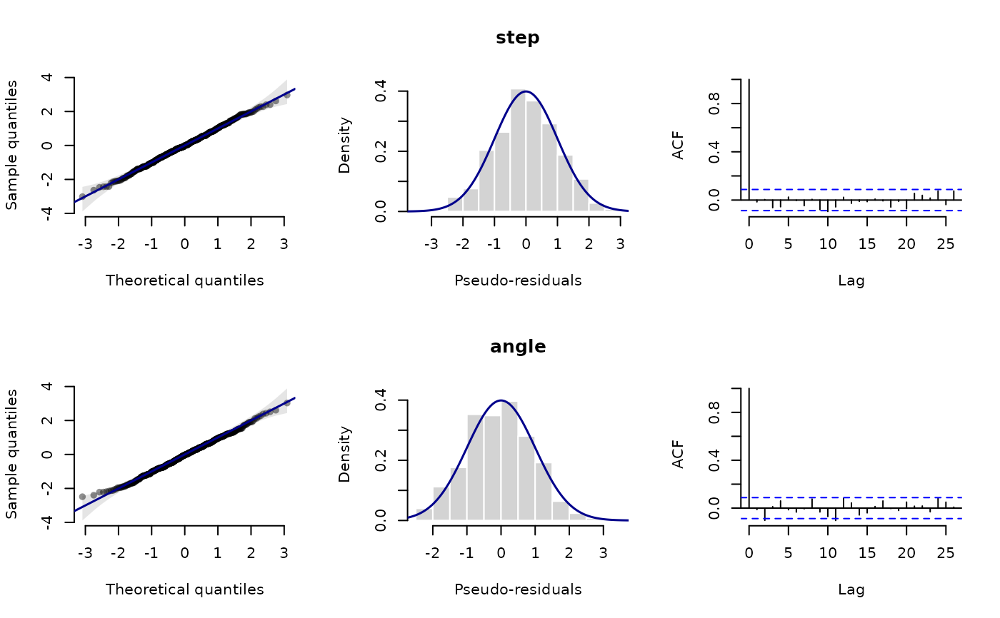
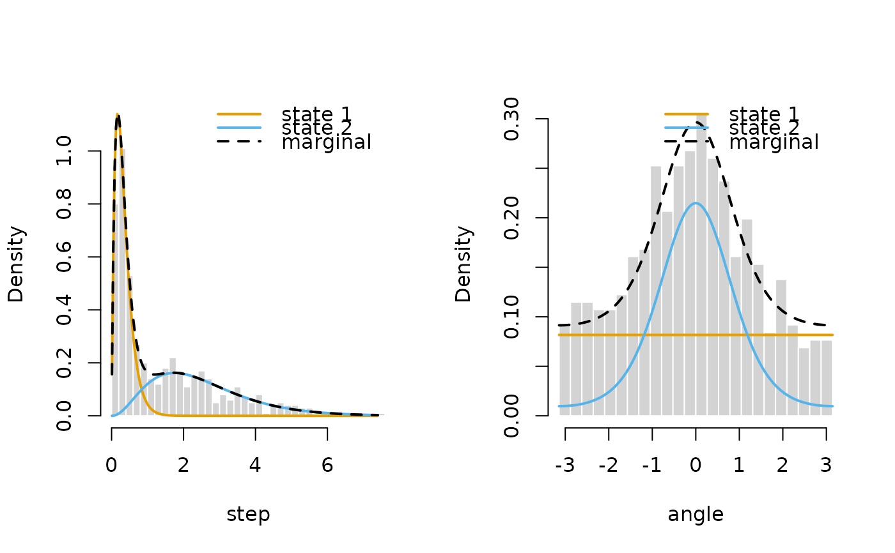
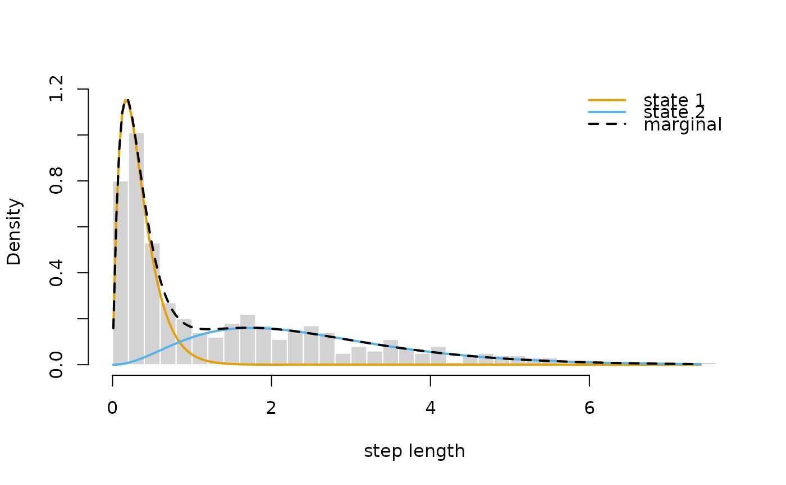

Plot a LaMaModel object
plot.LaMaModel.RdPlots the pseudo-residuals of a model from report or qreml,
computed by pseudo_res from the model object alone, with one row of plots per data stream,
or the estimated state-dependent densities of each data stream built with statedens.
Arguments
- x
model object of class
"LaMaModel"- type
"residuals"(default) for the pseudo-residuals,"statedens"for the state-dependent densities- stream
optional names of the data streams to plot, by default all
- ...
further arguments passed to
plot.LaMaResiduals, or fortype = "statedens"see ‘Details’
Value
for type = "residuals" the pseudo-residuals, for type = "statedens" a list with the grid x,
the weighted state-dependent densities density (one column per state), the state weights and the observations data
(or a list of these for several streams), invisibly
Details
For type = "statedens", each data stream is shown as a histogram with the state-dependent densities
(probabilities for discrete distributions) weighted by the state probabilities, and their sum, the marginal density, as a dashed line.
The weighted density of state \(j\) is the mean over the observations of \(p_{tj} f_j(x; \theta_{tj})\),
which allows for parameters that depend on covariates, several tracks and inhomogeneous state processes.
This needs allprobs to be the product of matrices from statedens, which is checked.
Further arguments for type = "statedens":
weightsstate probabilities \(p_{tj}\):
"stateprobs"(default) for the local state probabilities fromstateprobs,"viterbi"for the states decoded byviterbi,"stationary"for the stationary distribution (averaged over tracks, or over the cycle for periodic models), or a vector of lengthnStatescolcolours of the states, defaults to
LaMaColorslwdline width
nnumber of grid points for continuous distributions
legendposition of the legend, e.g.
"topright"(default), orFALSEfor none- ...
arguments passed to
plot()of the histogram, e.g.breaks,main,xlab,xlim,ylimorborder
Several streams are shown side by side, unless par(mfrow) has been set.
Examples
dat <- list(step = trex$step[1:500], angle = trex$angle[1:500])
nll <- function(par) {
getAll(par, dat)
Gamma <- tpm(eta)
allprobs <- statedens(step, dgamma2, exp(log_mu), exp(log_sigma)) *
statedens(angle, dvm, 0, exp(log_kappa))
-forward(stationary(Gamma), Gamma, allprobs)
}
par <- list(eta = c(-2, -2), log_mu = log(c(0.3, 2.5)), log_sigma = log(c(0.2, 1.5)),
log_kappa = log(c(0.2, 1.5)))
obj <- MakeADFun(nll, par, silent = TRUE)
opt <- nlminb(obj$par, obj$fn, obj$gr)
mod <- report(obj)
plot(mod) # pseudo-residuals

plot(mod, type = "statedens") # state-dependent densities of both streams

plot(mod, type = "statedens", stream = "step", weights = "viterbi", breaks = 40, xlab = "step length")
